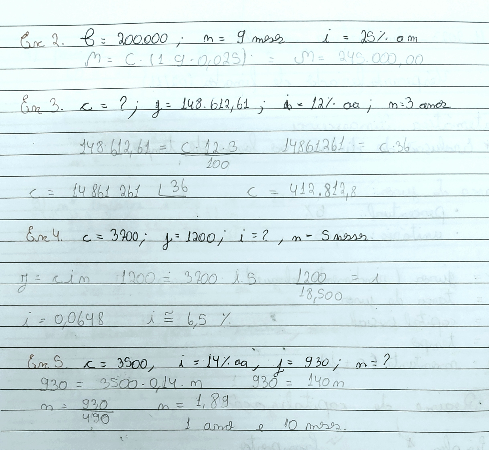
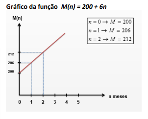

O juros simples é uma capitalização de uma taxa de juros que age sempre sobre o capital inicial, durante o período. Ou seja, em um capital de R$5.000,00 durante 4 anos, com uma taxa de juros que 20% ao ano, no primeiro ano irá render R$1.000,00 em cima dos R$5.000,00. No segundo ano irá render um valor de R$1.000,00 ainda em cima dos R%5.000,00 sem considerar o que já rendeu nos últimos anos.
A Fórmula para calcular o juros simples é: 𝑱 = 𝑪 ∙ 𝒊 ∙ 𝒏.
Onde 𝑱 - é o juros rendido, 𝑪 - é o capital inicial, 𝒊 - é a taxa de rendimento e 𝒏 - é o tempo que ficou aplicado.
É importante lembrar que o 𝑱 é o que rendeu, sem considerar o que foi aplicado, se você quiser descobrir o total, chamado de montante, você deve somar o capital inicial com o juros rendido. 𝑴 = 𝑪 + 𝑱.
Para fazer o cálculo do montante diretamente, podemos usar a fórmula: 𝑴 = 𝑪(𝟏 + 𝒊𝒏), que é uma junção das duas fórmulas já apresentadas.
Muitas vezes também a taxa de juros e o prazo vêm com unidades de tempo diferente, quando isso ocorreu devemos converter os a taxa ou o prazo para a mesma unidade de tempo. Se a taxa de juros é de 1,3% ao mês, e o prazo é de 105 dias, podemos dividir a quantidade do prazo pela quantidade de dias da unidade da taxa, ou seja 105/30, e obtivemos o prazo em meses, mesma unidade que a taxa. É RECOMENDADO CONVERTER SEMPRE O PRAZO, MAS A TAXA, DE JUROS SIMPLES, TAMBÉM PODE SER CONVERTIDA.
O gráfico do juros simples segue o mesmo modelo de uma função afim.
Voltar